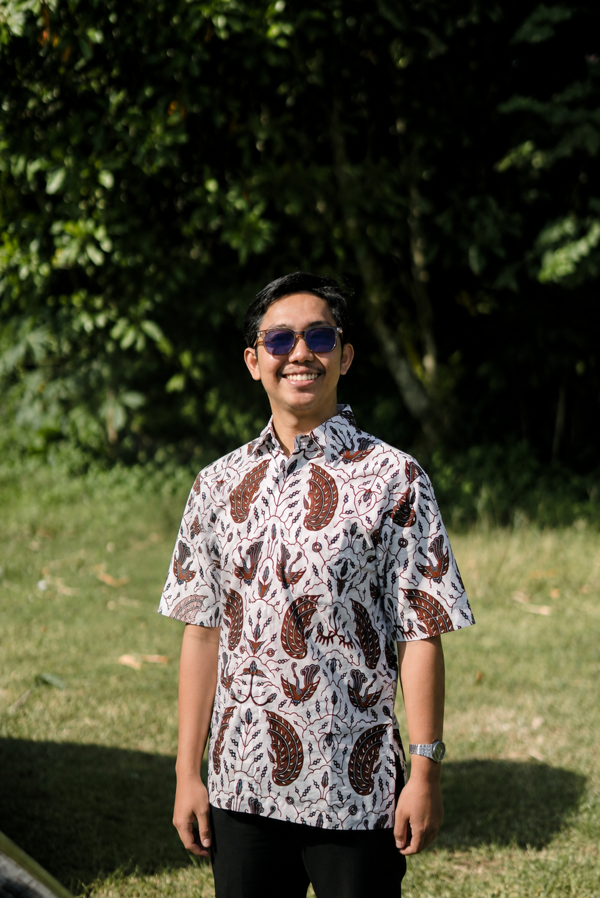
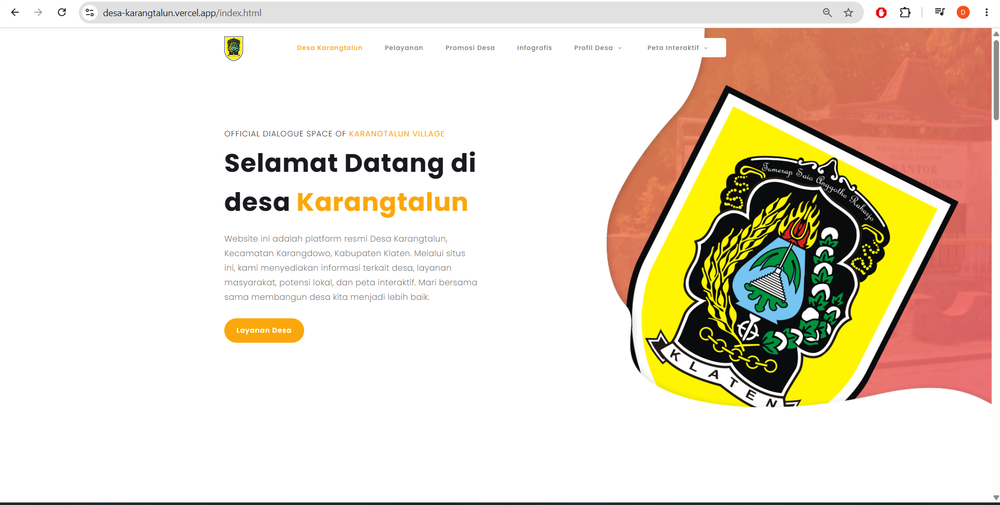
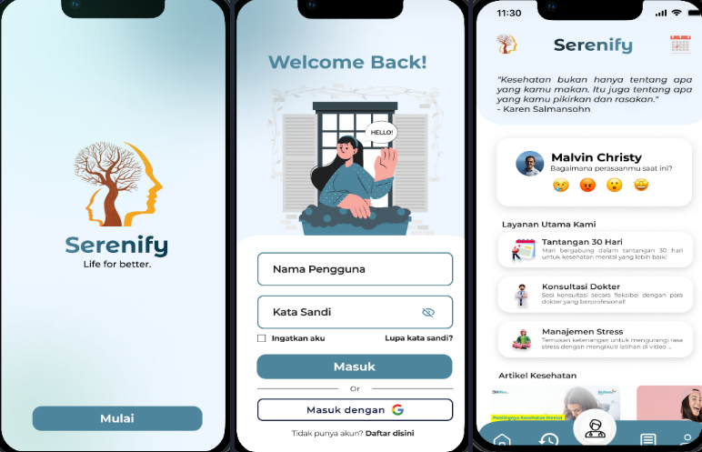
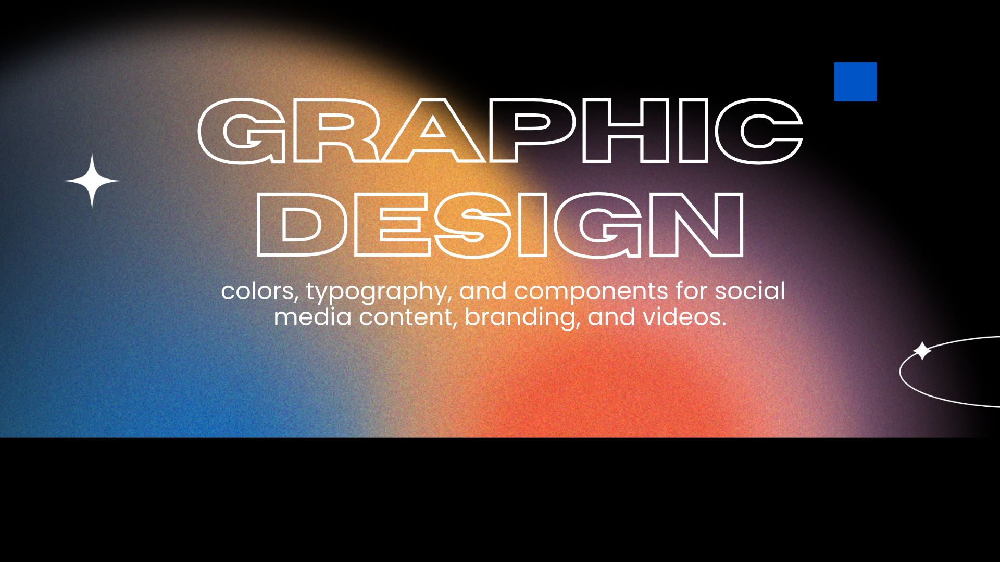

IT Support & Operations
Supporting operational reliability through monitoring, troubleshooting software/hardware, and data management.
Dhenmas Aji Rosulli, an Informatics Engineering graduate interested in System Analysis, IT risk management, IT support, Quality assurance and reliable technology operations.

I am an Informatics Engineering graduate from Universitas Pembangunan Nasional “Veteran” Yogyakarta, interest in systems analysis, IT risk management, IT operations,technical support, and QA manual testing .
I have experience in IT administration, IT support, IT risk management, and expanded my skills in manual QA testing through self-directed learning and practical. having developed skills in data management, documentation, operational monitoring, control testing, and troubleshooting. I enjoy exploring how systems function, identifying potential issues, and discovering practical ways to enhance efficiency, reliability, and business processes.
I am committed to continuous learning and the development of my technical skills, with a strong focus on systems analyst, quality assurance and technical support. My goal is to serve as a bridge between technology and business needs by delivering reliable, effective solutions that align with organizational objectives.
Supporting operational reliability through monitoring, troubleshooting software/hardware, and data management.
Understanding business requirements, analyzing processes, and created BRD and FSD for system requirements.
Supporting risk assessment, control evaluation, documentation, and IT governance activities.
Managing, validating, and analyzing data to support informed decision-making and improve business processes.
Self-taught Manual QA Tester with freelance experience in designing test cases, executing test scenarios, and reporting bugs to ensure product quality.
System Analyst · IT support · Troubleshooting · IT operations · QA Manual Testing
Control Testing · Data validation · Operational risk support · Report & documentation
Foundational programming and web development for practical digital solutions.
UI/UX design fundamentals, visual communication, Design Thinking, end-user support.
 SQLData
SQLData
 FigmaUI/UX
FigmaUI/UX
 NotionWorkspace
NotionWorkspace
 JiraWorkspace
JiraWorkspace
PT Bank Negara Indonesia (Persero) Tbk · Banking
Supported operational-risk monitoring and documentation activities related to banking technology services and risk controls.
Alpha Labs · Freelance
Analyzed business processes, created BRD & FSD, and conducted QA testing manual to support successful Odoo ERP implementation.
MOI BRANDS · Food and Beverage
Supported daily IT administration and operational services across departments.
Rumah Sakit Pertamina Cilacap · Medical
Supported administration and operational MCU.

Analyzing client business processes to design effective Odoo ERP module solutions, conducting gap analysis, drafting functional specifications, and overseeing user testing and training to ensure the system implementation is efficient and aligned with the company’s operational requirements.
a joint project by 3 KKN groups for the Karangtalun Village website. utilizing modern web technologies and Vercel deployment, which includes structuring village profile information, mapping local potential, and providing training on digital content management for village officials.

Mental-wellbeing app capstone concept created during UI/UX design learning, using Figma.The design process involved building comprehensive user flows, low-fidelity wireframes, and high-fidelity prototypes complete with a consistent design system. The user interface was intentionally crafted with calming visual elements and intuitive navigation to ensure a soothing experience.

Creating visually compelling graphic designs for social media, branding, and marketing materials using Canva and Adobe Photoshop, while editing engaging video content with CapCut to deliver consistent, eye-catching visuals that strengthen brand identity and capture audience attention.
Universitas Pembangunan Nasional “Veteran” Yogyakarta
August 2021 - December 2025
Study Independent — UI/UX Designer program
Esports and football achievements
BNSP